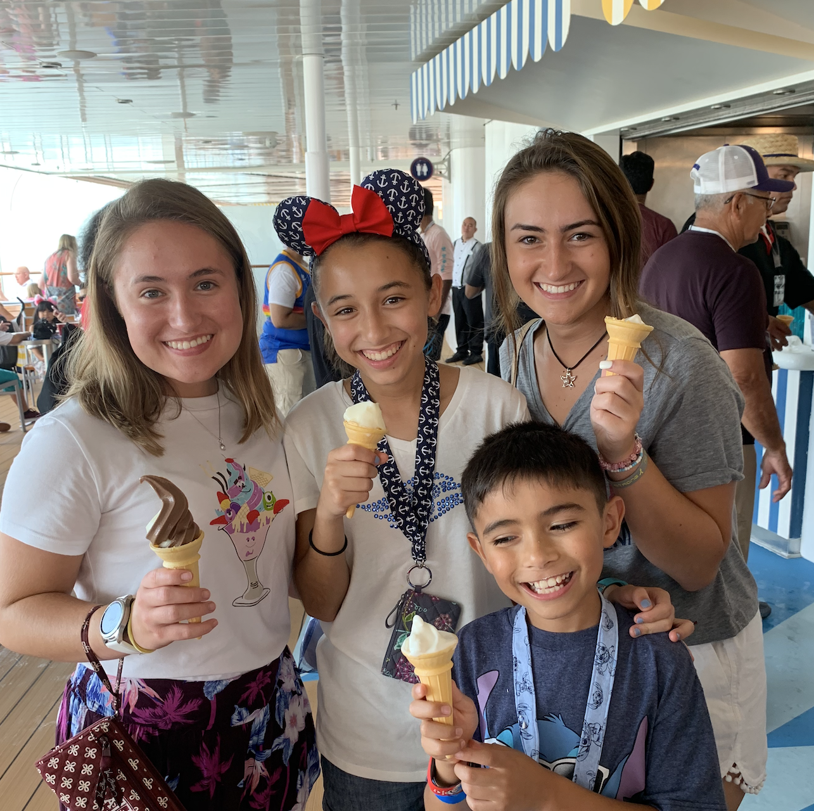

Welcome!
I am so excited you are visiting my page! I know planning cruises, especially disney cruises can be very overwheming but I am here to help! Here are a few of my favorite things about disney cruises!
 One of my favorite things about disney cruises is the way it brings families togther! There truly is something for all ages on disney cruises so it is a perfect option for big family vacations!
One of my favorite things about disney cruises is the way it brings families togther! There truly is something for all ages on disney cruises so it is a perfect option for big family vacations!
Disney Cruises are one of the few cruise lines to make it truly all inclusive. Almost everything you want is available to you and is included in the price of your trip! One of the best things is the soft serve on the pool deck!
 One of the best nights on the cruise is Pirate night! The whole ship dresses up in Pirate gear and the sheip is completly decorated. The menus in all the resturants are changed and all the waiters talk like pirates! Finally the night ends off with a huge dance party on the pool deck and fireworks!
One of the best nights on the cruise is Pirate night! The whole ship dresses up in Pirate gear and the sheip is completly decorated. The menus in all the resturants are changed and all the waiters talk like pirates! Finally the night ends off with a huge dance party on the pool deck and fireworks!
These are just a few of my favorite things, there are sooooo many more! Keep in mind every trip is uniqe and each family will have a diffrent experiance!
Clik the planning tab to read a little bit more about the choices you have when planning your cruise!